Growing Tips For The Herb Garden
A list many of the more popular herbs that appear in American gardens. each herb is identified as an annual or biennial, and pointers are included on where, when and how to plant each one.
February/March 2000
Issue # 178 - February/March 2000
The following are many of the more popular herbs that appear in American gardens. We've identified each herb as an annual or biennial, and included pointers on where, when and how to plant each one.
Anise Annual. Sow seeds in early summer to have a fully ripened plant by late September.
Balm Perennial. Grows slowly from seed. Start indoors eight weeks before last frost. Transplant seeds into sandy soil.
Basil Annual. Grows easily from seed. Sow in early spring after danger of frost is passed and place in well-drained soil and full sunlight.
Bay Perennial. Propagate by seed, cuttings or layering in any kind of soil. Sunny locations are best.
Chervil Annual. Sow seeds in spring for a fall crop. Thrives in moist, well-drained soil and partial shade.
Chives Perennial. Grows easily from seed. Needs moderately rich soil and full sun. Cut back leaves regularly to prevent flowering and preserve flavor of herb.
Dill Annual. Sow after danger of frost is over. Water frequently. Pinch to keep flowers from developing in order to preserve herb's flavor.
Fennel Perennial. Grows easily from seed in alkaline soil and full sun.
Garlic Annual. Plant cloves six inches deep and two inches apart in rich soil during either early spring or early fall.
Horehound Perennial. Sow seeds in early spring. Can also be propagated from cuttings or root division. Prefers full sun and sandy soil.
Lavender Perennial. Propagate by root division. Prefers full sun and alkaline soil.
Marjoram Perennial. Start seeds indoors. Transplant to a rich light soil in full sun.
Mints Perennial. Peppermint and spearmint are most common. Grows best in sun with partial shade in enriched soil with regular watering.
Oregano Perennial. Prefers well-drained slightly alkaline soil with full sunlight. Propa gate by seed, root division or cuttings.
Oswego Tea Perennial. Likes a moist, rich soil and will thrive in full sun or partial shade. Propagation is best achieved by root division in spring or fall.
Parsley Biennial. Needs rich, well-drained soil and either full sun or partial shade. Tends to germinate slowly.
Roman Chamomile Perennial. Sow seeds in late spring in semi-rich soil. Propagate by separating runners in spring or summer.
Rosemary Perennial. Needs full sun and a sandy alkaline soil. Propagation is best done by layering or cuttings.
Sage Perennial. Does best in sandy, alkaline soil. Propagate flowering varieties by seed, others by cuttings or layering.
Savory Perennial if winter variety, annual if summer variety. Summer needs rich light and moist soil. Winter thrives in poorer soil with less water. Summer propagated by seeds, winter by seeds. division or cuttings.
Scented Geraniums Perennial. Species include rose, apple, peppermint and lemon. They can be propagated from cuttings and need sun and moist, well-drained soil.
Sorrel Perennial. Grows from seeds in moist rich soil and either full sun or partial shade.
Southern Wood Perennial. Comes in camphor-, lemon- and tangerine-scented. Can be propagated in fall or spring by root division or cuttings. Does well in full sun and well-drained soil.
Sweet Woodruff Perennial. Can be started from seeds, root division or cuttings. Prefers well-drained soil and partial shade.
Tansy Perennial. Can be started from seed or by division. Plant in full or partial sun in average soil.
Tarragon Perennial. French variety is best for cooking; Russian variety has little taste. Propagate by cuttings or division. Needs well-drained rich soil and full sun.
Thyme Perennial. Varieties include lemon, English, golden and garden. Propagate by cuttings or division. Gets woody and makes great ground cover for dry, sloping areas.
|
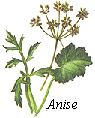 |
|
 |
|
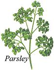 |
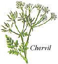 |
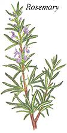 |
|
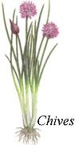 |
 |
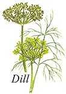 |
|
|
 |
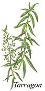 |
|
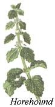 |
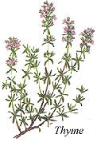 |
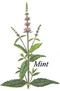 |
|
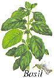 |
|
|